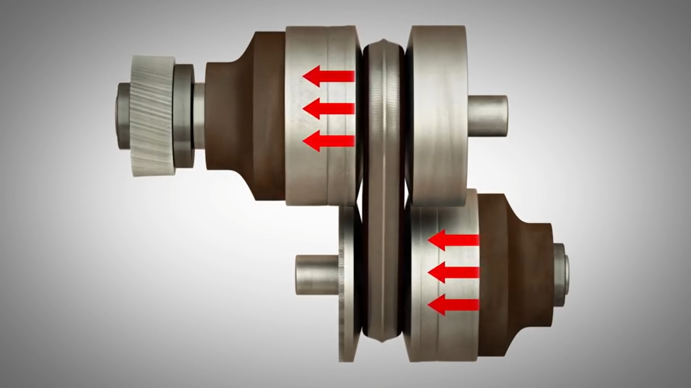

电梯
电梯是一种随着高楼大厦而出现的交通或运输工具。轿厢是电梯运载乘客或其他载荷的箱体部件。但从整体结构上看，为平衡轿厢载荷、减少电动机功率，每个轿厢还有一个“对重”。轿厢和对重通过钢丝绳（曳引绳）连接起来，曳引绳两端分别连着轿厢和对重，缠绕在曳引轮和导向轮上，曳引电动机通过减速器变速后带动曳引轮转动，靠曳引绳与曳引轮摩擦产生的牵引力，实现轿厢和对重的升降运动，达到运输目的。 固定在轿厢上的导靴，可以沿着安装在建筑物井道墙体上的固定导轨往复升降运动，防止轿厢在运行中偏斜或摆动。常闭块式制动器在电动机工作时松闸，使电梯运转，在失电情况下制动，使轿厢停止升降，并在指定层站上维持其静止状态，供人员和货物出入。另外，补偿装置用来补偿曳引绳运动中的张力和重量变化，使曳引电动机负载稳定，轿厢得以准确停靠。电气系统实现对电梯运动的控制，同时完成选层、平层、测速、照明工作。指示呼叫系统随时显示轿厢的运动方向和所在楼层位置。安全装置保证电梯运行安全。 对电梯来说，安全性是最重要的性能。为了保证安全，工程师们给电梯设计了多重安全保障，使得万一电梯出现故障时也不会危及到乘员的生命。 首先，电梯用的钢丝绳是专门设计和制造的。钢丝绳的配置不只是为承担电梯轿厢和额定载重量，还考虑到了曳引力的大小，因此，钢丝绳的抗拉强度远远高于电梯的载重量，安全系数都在12以上。通常电梯都配有四根以上的钢丝绳，一般情况下电梯钢丝绳是不会同时断的。如果发现钢丝绳断股的话，这台电梯就会被停用，待更换钢丝绳以后再投入使用。 其次，电梯运行中如遇到突然停电或供电线路出现故障，这也是电梯设计时就考虑到的。因为电梯本身设有电气、机械安全装置，轿厢下部的安全钳就会卡住导轨，使轿厢固定在导轨上面而不致滑落。有的电梯控制柜里面还配有应急电源，当突然停电以后，足以保证把轿厢送到最近的楼层让乘客安全逃生。 另外，电梯控制系统内还设有限速器来防止电梯超速运行。当电梯的速度超过某一设定速度（例如，额定速度的1.15倍）时，限速器会自动动作，使电梯减速或停止运行。同样，在轿顶部分有专门的称重装置，当电梯的载重量超出设定值时，电梯会自动报警，并停止运行。